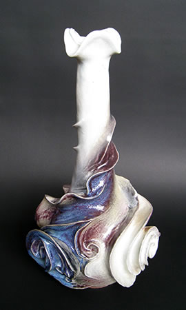

― 法曽焼と法曽焼同好会 ―
＜法曽焼の歴史＞
法曽焼は、1200年前にこの地を訪れた弘法大師と、唐より大師に随行してきた白龍により始められたとの
いわれがあります。
その後江戸時代初期に、備中松山に赴任した国奉行･小堀遠州が茶道具を焼くために再興し、法曽窯が
築かれたと伝えられています。
その技法は当時の最先端をゆくものといえます。
しかし江戸後期頃に途絶え、以来「幻の法曽焼」といわれてきました。
昭和43年には法曽古窯跡地の発掘調査があり、多数の陶磁器片が見つかっています。
発掘された陶磁器片は焼締陶の他、地元の磁石を用いた施釉の磁器や半磁器など多岐にわたり、多様な
技法で陶磁器が焼かれていたことがわかります。
=∴=∵=∴=∵=∴=∵=∴=∵=∴=∵=∴=∵=∴=∵=∴=∵=∴=∵=∴=∵=∴=∵=∴=∵=∴=∵=∴=
 |
＜法曽焼の復興＞
2005年の猪風来美術館開館を期に、法曽焼同好会が結成され、猪風来の指導のもと法曽焼復興の試みが
開始されました。
粘土探しから始まり、製作法、焼成法、釉薬の研究を重ね、解明がなされました。
そして地域の方々とともに、法曽焼のための穴窯建設に取り掛かります。
2007年12月に焼締めの法曽焼水甕が、2009年２月には磁器・施釉の茶器が焼き上がり、150年ぶりの
法曽焼復興を成し遂げることができました。
中でも『銘・法曽滴（法曽茶碗）』は、その成果を珠玉の一品として結実させたものです。
| 【銘・法曽滴（法曽茶碗）】 |
=∴=∵=∴=∵=∴=∵=∴=∵=∴=∵=∴=∵=∴=∵=∴=∵=∴=∵=∴=∵=∴=∵=∴=∵=∴=∵=∴=
＜新法曽焼・縄文法曽陶＞
復活した法曽焼の技法に新たな魂を吹きこみ発展させるべく、猪風来は「新法曽焼」へ挑戦しました。
日本を代表する縄文造形作家である猪風来の手により、伝統ある法曽焼の技法と縄文造形を融合させ、
かつてない新たな造形美を目指して。
そうして法曽の窯から生まれた、『大地から湧きたつ豊穣なる精気のひと雫が化身した』ような陶作品。
この新たな作品群は「縄文法曽陶」と名づけられました。
 |
|
| 【岩の雫（しずく）】 h63㎝ | |
|  |  |
| 【花の雫（しずく）１】 h45㎝ | 【花の雫（しずく）２】（上から撮影） h61㎝ |
「縄文法曽陶」は地元法曽の山土粘土と磁器土を使用し、１２５０度を超す高温で焼成される。
陶土による釉薬陶作品は重厚な土味に垂れかかる白や青緑の釉薬が力強く、大地のぬくもりが凝固した
ような様相。
磁器土の作品はうってかわって対照的に、滑らかな白い地肌に優美な縄文スパイラル文様が浮き出し、
釉薬の青緑や紫が華やかであり、且つ「わび・さび」にも通ずる深みを感じさせる逸品に仕上がりました。
これらの作品は猪風来が新見市法曽の地から生み出し世界に発信する、猪風来流縄文スパイラル芸術です。